Reactions
Reactions is a new feature that allows SQL LRS to watch for patterns in submitted xAPI data and dynamically generate new statements in response.
Usage
To use Reactions the LRSQL_ENABLE_REACTIONS environment variable or the enableReactions LRS configuration property must be set to true. Reactions is disabled by default.
To view a reaction, click on the reaction in the table above. This will display a reaction view page:
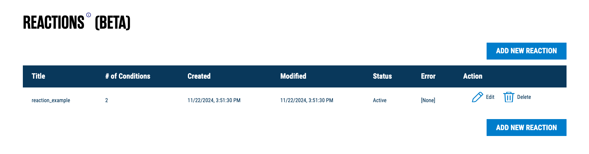
Each reaction has a title, ID, and created/modified timestamps. It also has an active vs. inactive status; a reaction can either be manually toggled as inactive, or it may be automatically set as inactive if an error is encountered when a reaction is triggered.
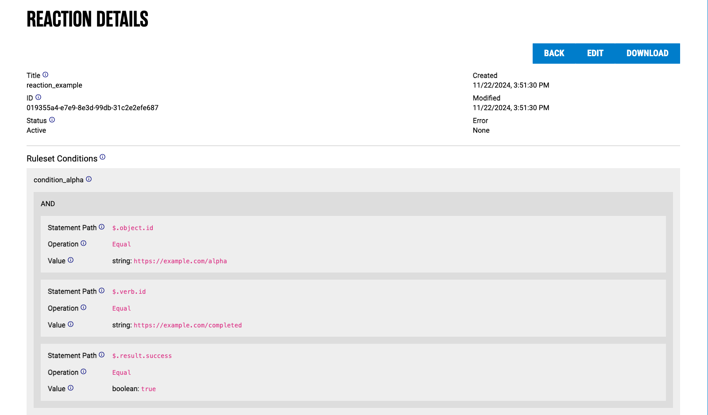 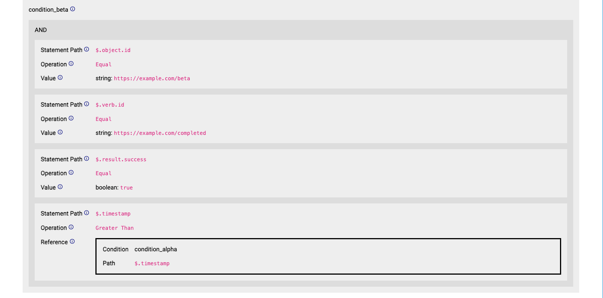 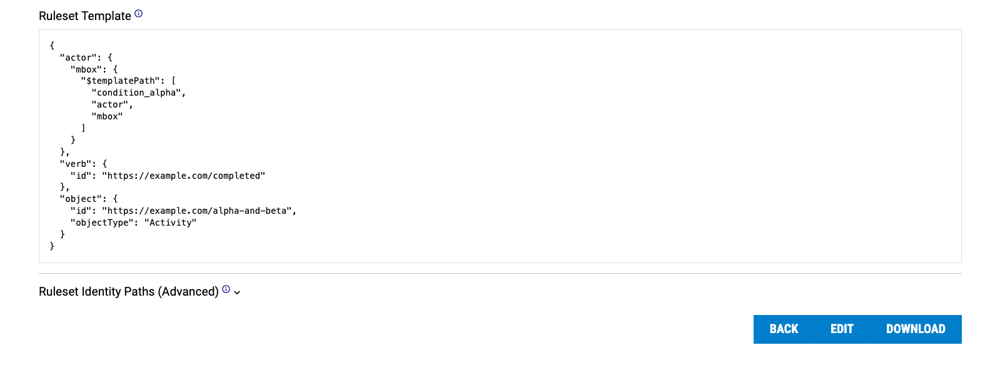
The most important part of a reaction is its ruleset. Each ruleset in turn contains the following properties: conditions, template, and identity paths. Each ruleset component is explained in the sections below.
To create a new reaction, click on "Add New Reactions" on the main Reactions page. Likewise, to edit a current reaction, click on "Edit".
Creating a new reaction will display an edit page, where the user can modify the reaction title, active status, and ruleset:
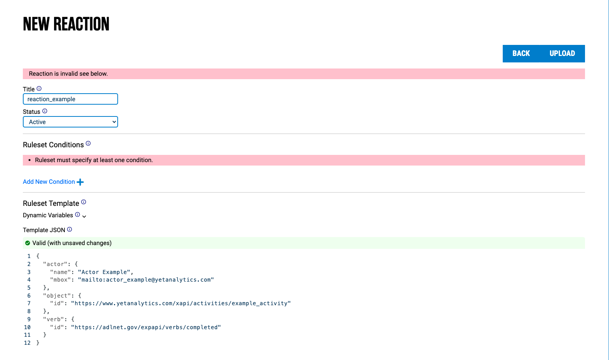
Conditions
Each condition is a set of rules for finding relevant statements. Each condition has a unique name followed by its rules, which can be composed with boolean logic.
In the example given, statement "alpha" must have object.id equal to https://example.com/alpha AND verb.id equal to https://example.com/completed AND result.success property equal to true:
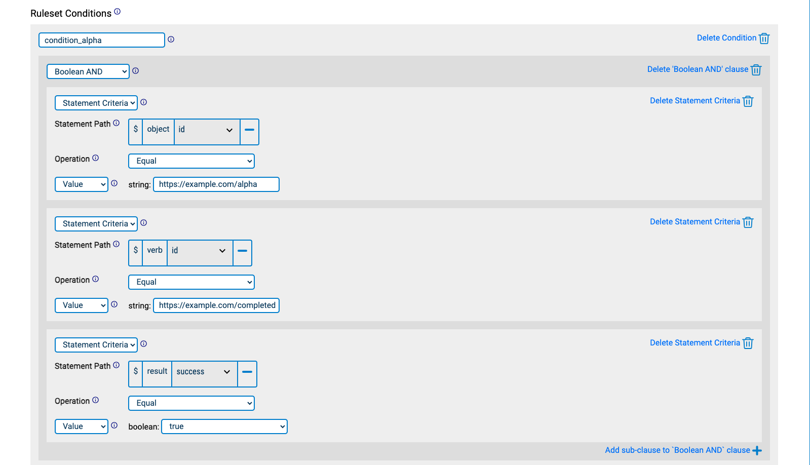
Statement "beta" must have verb.id equal to https://example.com/completed AND result.success equal to true (just like statement "alpha") AND object.id equal to https://example.com/beta AND timestamp greater than that of statement "alpha":
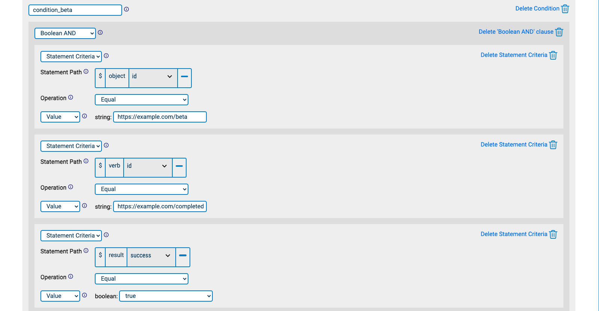 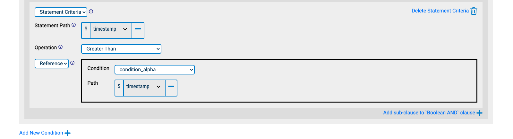
Rules
All rules have a path array that indicates a path in an xAPI statement and an operator that is one of the following:
- Greater than
- Less than
- Greater than or equal
- Less than or equal
- Equal
- Not equal
- Like (fuzzy match using SQL
%syntax; for example,bo%matchesbobandboz.) - Array contains
Rules either have a val literal value or a ref which is a path into a statement found for another condition.
Booleans
Booleans compose multiple rules together. Booleans are objects with a single key:
- AND: Array of rules which must all be true
- OR: Array of rules of which one must be true
- NOT: Rule that must not be true
Rule types (either "Statement Criteria" or a boolean) can be selected using the topmost select input, or via the "Add sub-clause" button. Booleans can be nested arbitrarily, e.g. an AND clause can have multiple OR subclauses, which can each have a NOT clause, and so on and so forth.
Template
The template describes the xAPI statement the reaction will produce. It is identical to an xAPI statement, except that object properties may be substituted with $templatePath. This is a path that points to a value in a statement matched by conditions, using a JSON array of xAPI statement properties.
To help with creating template paths, the above panel can be opened, which guides the user on how to create paths. In this example, we create a template path to the actor mbox for the actor matched by condition_alpha:
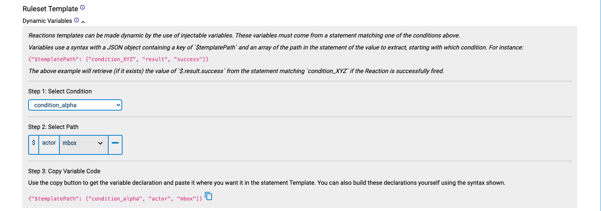
We can then copy-paste the template path into our statement template:
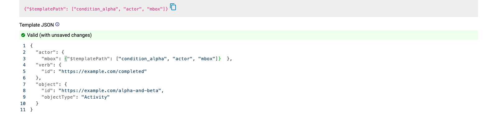
Identity Paths
Identity Paths are a method of grouping statements for which you are attempting to match conditions on. Typically, reactions may revolve around actor Inverse Functional Identifiers (IFIs), e.g. actor mbox or account name strings. Any statements with the same IFI properties will be considered a "group" to match conditions on. This is equivalent to saying "For a given Actor, look for statements that share IFI values."
Alternative approaches to Identity Path may be used by modifying identityPaths, for instance using the registration context property to group statements by learning session.
In this example (the default set of identity paths), say we have Statements A and B that share an IFI and match condition_alpha and condition_beta, respectively. This will trigger the reaction. Conversely, if Statements A and B have different IFIs, then the reaction will not trigger:
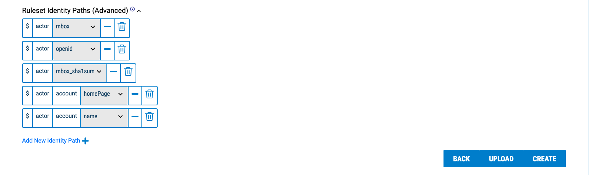
Example
Given the reaction specified above, if the following statements are posted to the LRS:
[
{
"actor": {
"mbox": "mailto:bob@example.com"
},
"verb": {
"id": "https://example.com/completed"
},
"object": {
"id": "https://example.com/alpha",
"objectType": "Activity"
},
"result": {
"success": true
},
"timestamp": "2024-01-23T01:00:00.000Z"
},
{
"actor": {
"mbox": "mailto:bob@example.com"
},
"verb": {
"id": "https://example.com/completed"
},
"object": {
"id": "https://example.com/beta",
"objectType": "Activity"
},
"result": {
"success": true
},
"timestamp": "2024-01-23T02:00:00.000Z"
}
]
Then the following statement will be added subsequently (note that some unrelated fields are removed for clarity):
{
"actor": {
"mbox": "mailto:bob@example.com"
},
"verb": {
"id": "https://example.com/completed"
},
"object": {
"id": "https://example.com/alpha-and-beta",
"objectType": "Activity"
}
}
JSON Format
Reaction data is stored internally in JSON format. The Reactions spec, including a JSON example, can be found here.